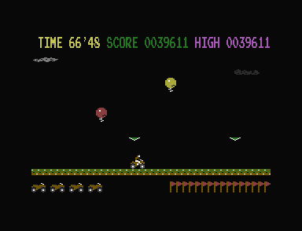
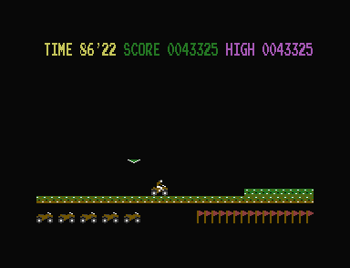
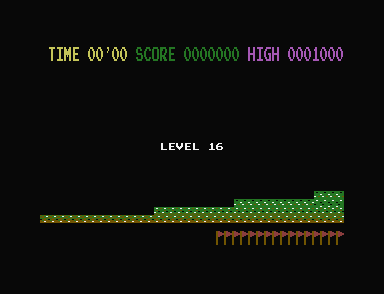
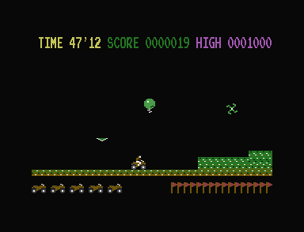
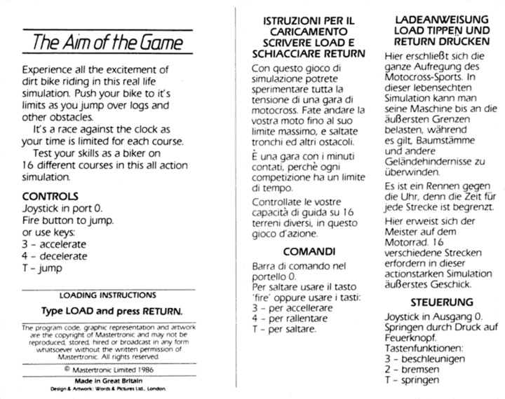

<meta charset="utf-8">
<meta name="viewport" content="width=device-width, initial-scale=1">
<title>Kikstart</title>
<link rel="preconnect" href="https://fonts.googleapis.com">
<link rel="stylesheet" href="https://fonts.googleapis.com/css2?family=Lato:wght@400;700;900&family=IBM+Plex+Mono:wght@400;500&display=swap">
<style>
:root{
  --bg:#23262d; --paper:#e9e7e1; --surface:#ffffff; --surface-2:#f1efea; --line:#d5d3cc; --line-soft:#e0ded8;
  --ink:#2f3136; --ink-soft:#55585f; --ink-mute:#80838a;
  --link:#1f5fa8; --link-hover:#154480; --accent:#1f5fa8;
  --amber:#c25a00; --cyan:#1f5fa8; --coral:#d04a3a; --green:#2a8a4a; --violet:#4a5bd6; --hl:#fff0c2;
  --chip:#2f3136; --chip-ink:#ffffff;
  --c64blue:#40318d; --c64grey:#686868;
  --fd:'Lato',system-ui,sans-serif; --fb:'Lato',system-ui,sans-serif; --fm:'IBM Plex Mono',ui-monospace,Menlo,monospace;
  --col:1080px; --gx:68px; --fs:17px; --lh:1.6; --hw:900; --h1:46px; --h2:26px; --sy:48px; --pp:26px; --r:10px;
  --plate-shadow:0 1px 2px rgba(0,0,0,.05),0 4px 14px rgba(0,0,0,.05);
}
*{box-sizing:border-box}
html{background:var(--bg);min-height:100%}
body{background:var(--paper);color:var(--ink);font-family:var(--fb);font-size:var(--fs);line-height:var(--lh);max-width:var(--col);margin:0 auto;min-height:100vh;padding:0 0 4rem}
h1,h2,h3{font-weight:var(--hw);letter-spacing:-.01em;text-wrap:balance;color:var(--ink);margin:0}
.wrap{padding:0 var(--gx)}
.hero{padding:48px var(--gx) 8px;text-align:left}
.eyebrow{font-family:var(--fm);font-size:12px;letter-spacing:.08em;text-transform:uppercase;color:var(--ink-mute);margin:0 0 10px}
.hero h1{font-size:var(--h1);line-height:1.15;letter-spacing:-.02em;margin:0 0 14px}
.hero .sub{margin:0 0 .6em;color:var(--ink-soft)}
section{padding:var(--sy) 0 24px}
section:last-of-type{border-bottom:none}
.fig{font-family:var(--fm);font-size:12px;letter-spacing:.08em;text-transform:uppercase;color:var(--ink-mute);margin:0 0 10px}
h2.t{font-size:var(--h2);margin-bottom:12px}
.lede{color:var(--ink-soft);margin:0 0 30px}
.plate{background:var(--surface);border:1px solid var(--line);border-radius:var(--r);padding:var(--pp);box-shadow:var(--plate-shadow)}
.cap{font-size:14px;color:var(--ink-mute);margin-top:14px;line-height:1.55}
.cap b{color:var(--ink);font-weight:700}
code{font-family:var(--fm);font-size:.82em;background:var(--chip);color:var(--chip-ink);border-radius:4px;padding:2px 6px;overflow-wrap:break-word;-webkit-box-decoration-break:clone;box-decoration-break:clone}

</style>
<style>
.ks-grid{display:grid;grid-template-columns:repeat(2,minmax(0,1fr));gap:24px;align-items:start}.ks-image{width:100%;height:auto;image-rendering:pixelated;background:#080808;border-radius:6px}.ks-controls{display:flex;gap:14px;flex-wrap:wrap;align-items:center;margin:14px 0}.ks-controls label{font-size:14px;display:flex;gap:8px;align-items:center}button,select,input{font:inherit}button,select{padding:8px 12px;border:1px solid var(--line);border-radius:5px;background:var(--surface);color:var(--ink)}button{cursor:pointer}button:hover{border-color:var(--link)}input[type=range]{max-width:100%;accent-color:var(--link)}.ks-readout{display:block;font-family:var(--fm);font-size:13px;padding:12px;background:var(--surface-2);border-radius:5px;line-height:1.7}.ks-stage{background:#080808;border-radius:6px;padding:12px;overflow:auto;text-align:center}.ks-stage canvas{display:block;image-rendering:pixelated;max-width:100%;height:auto;margin:auto}.ks-panorama{overflow-x:auto;background:#080808;border-radius:5px;padding:16px 0}.ks-panorama canvas{display:block;max-width:none;image-rendering:pixelated}.ks-table{width:100%;border-collapse:collapse;font-size:14px}.ks-table td,.ks-table th{text-align:left;padding:9px 12px;border-bottom:1px solid var(--line-soft)}.ks-table th{font-family:var(--fm);font-size:11px;text-transform:uppercase}.ks-table-scroll{overflow:auto}.ks-bar{display:inline-block;height:7px;border-radius:2px;background:var(--link)}.ks-chip{display:inline-block;padding:3px 8px;background:var(--surface-2);border-radius:5px;font-size:13px}.ks-manual{max-width:600px;width:100%;height:auto}.ks-small{font-size:14px;color:var(--ink-soft)}.ks-pixels{image-rendering:pixelated}.ks-sample{background:var(--hl);padding:14px;border-radius:5px;font-size:14px}.ks-status{font-size:14px;color:var(--ink-mute)}
@media(max-width:700px){:root{--gx:20px;--h1:36px;--fs:16px}.ks-grid{grid-template-columns:1fr}.ks-controls{gap:10px}.plate{padding:16px}.ks-table td,.ks-table th{padding:8px}}
</style><!-- tabs -->
<header class="hero"><p class="eyebrow">1986 · Mastertronic · Commodore 16 / Plus/4</p><h1>Kikstart</h1><p class="sub">A recorded ride through sixteen courses, and the finish line reused at the start of the next lap.</p></header>
<main class="wrap"><section id="ending"><p class="fig">01 · The sixteenth finish</p><h2 class="t">Secret: The last finish line comes from the beginning</h2>
<p>The sixteenth course wraps the terrain pointer to <code>$2F00</code>. The timer then reads the first course's <code>$FD</code> marker at <code>$2F10</code> and starts the final bonus. The course counter advances to 16 and the game resumes riding on the next lap.</p>
<div class="plate"><div class="ks-controls"><label>Recorded moment <select id="ending-milestone"></select></label></div><canvas id="ending-chart" width="900" height="190" style="width:100%;height:auto" aria-label="Recorded bike height through sixteen courses"></canvas><label class="ks-small" for="ending-position">Move through the recorded ride</label><input id="ending-position" type="range" min="0" max="1" value="0" style="width:100%"><output id="ending-result" class="ks-readout"></output><p class="cap">The line plots the bike's vertical coordinate, with a point every ten control polls. Each poll is one call to the game's joystick reader. Bonus and recovery waits remain in the recording. <a href="reference/ending-route.json" download>Download the joystick recording</a>.</p></div>
<div class="ks-grid" style="margin-top:24px"><div><p class="cap">The final finish uses the marker at the start of the road.</p></div><div><p class="cap">After the bonus, right input accelerates the bike from 96 to 249. Five bikes remain.</p></div></div>
<p>The first course starts at <code>$2F02</code>, two columns after the wrap address. That skips the same finish marker when a new game starts. The final wrap returns to <code>$2F00</code>, where the marker is sixteen columns ahead and triggers the finish.</p><p class="cap">The 36,979-poll route completes sixteen finishes with five crashes and recoveries. It continues for 64 further polls on the next lap. Evidence: <a href="source.html#2E28">pointer wrap</a>, <a href="source.html#2318">marker read</a>, and <a href="source.html#2A18">course counter</a>. The recording covers this transition; behavior far into later laps remains open.</p></section><section id="selector"><p class="fig">02 · The hidden control</p><h2 class="t">Secret: Hold 3 and 4 to choose a course</h2>
<p>During the scrolling demonstration before play, hold 3 and 4 together for about two seconds. LEVEL appears. Use 3 to move back, 4 to move forward, and T to start. Moving back from course one selects course sixteen.</p><div class="ks-grid"></div><p class="cap">Both screens were reached with keyboard input. The hold counter at <code>$2DB4</code> reaches 100. The selected course index stays between 0 and 15; two number tables at <code>$1DC0</code> and <code>$1DD0</code> turn it into the course number on screen. <a href="levels.html">Preview the course layouts</a>.</p></section><section id="keyboard"><p class="fig">03 · The printed controls</p><h2 class="t">Bug: The cassette swaps the speed keys</h2>
<p>The English cassette instructions say 3 accelerates and 4 decelerates. The supplied program implements 3 as the brake and 4 as the accelerator. T jumps in both the instructions and the game.</p><div class="plate"><div class="ks-table-scroll"><table class="ks-table"><thead><tr><th>Key</th><th>Printed English panel</th><th>Game from speed 128, four passes</th></tr></thead><tbody><tr><td>3</td><td>Accelerate</td><td>116 · brakes</td></tr><tr><td>4</td><td>Decelerate</td><td>140 · accelerates</td></tr><tr><td>T</td><td>Jump</td><td>Airborne state 7</td></tr></tbody></table></div><p class="cap">Each key test starts from the same riding state. <code>$2704</code> packs the key matrix; <code>$2784</code> changes speed. Joystick 1 left/right/fire gives the same complete control set. The supplied packed release's provenance remains unknown. <a href="index.html#controls">Try the speed arithmetic</a>.</p></div></section><p id="load-status" class="ks-status" role="status">Loading the annotated game data…</p></main>
<footer class="wrap"><p class="ks-small">Game code by Shaun Southern. Additional graphics credited to Andrew Morris. <a href="https://github.com/gamesexplained/gamesexplained">Games Explained</a> · <a href="https://creativecommons.org/licenses/by-sa/4.0/">CC BY-SA 4.0</a> text · <a href="https://opensource.org/licenses/MIT">MIT</a> page code.</p></footer>
<script src="../../lib/c16.js"></script><script src="../../lib/cpu6502.js"></script><script src="../../lib/ted-sound.js"></script>
<script>
/* kikstart-core */
const KS = (() => {
  const FRAME=35568, CLOCK=1773447;
  function speed(value,control,air=false){
    const step=air?2:3, hi=air?250:249, lo=air?98:99;
    if((control&8)&&value<hi)value=(value+step)&255;
    if((control&4)&&value>=lo)value=(value-step)&255;
    return value;
  }
  function bonus(ram,course,bikes,tenths){
    const bikeUnits=(ram[0x1d38+bikes]-0x52)*10+ram[0x1d40+bikes]-0x52;
    const multiplier=ram[0x1e10+(course&15)];
    return {bikeUnits,multiplier,points:(tenths+bikeUnits)*multiplier,nextBikes:Math.min(5,bikes+1)};
  }
  function course(ram,i){
    const start=ram[0x1e50+i]|ram[0x1e60+i]<<8;
    const end=i<15?(ram[0x1e51+i]|ram[0x1e61+i]<<8):0x3fd8;
    return {start,end,columns:ram.slice(start,end),seconds:ram[0x1e70+i],multiplier:ram[0x1e10+i],drift:ram[0x1de0+i],threshold:ram[0x1df0+i]};
  }
  function terrain(ram,columns){
    const w=columns.length*8,h=48,px=new Uint8Array(w*h), colours=[0,0x71,0x39,0x35];
    for(let col=0;col<columns.length;col++)for(let row=0;row<6;row++){
      const glyph=row<5?ram[0x1ec0+64*row+(columns[col]&63)]:1;
      for(let y=0;y<8;y++){
        const b=ram[0x1000+8*glyph+y];
        for(let x=0;x<4;x++){
          const c=colours[(b>>(6-2*x))&3],a=(row*8+y)*w+col*8+2*x;
          px[a]=px[a+1]=c;
        }
      }
    }
    return {w,h,px};
  }
  function registers(base=0x10,scroll=0){
    const t=Array(32).fill(0);t[6]=0x1b;t[7]=0x98|scroll;t[0x13]=base;t[0x14]=8;
    t[0x16]=0x71;t[0x17]=0x39;t[0xc]=t[0xd]=0xff;return t;
  }
  function shape(ram,kind,type,phase,align=0){
    const m=ram.slice();m.fill(0,2,0x1000);m.fill(0xff,0x10,0x14);
    const cpu=new C64Cpu.CPU(m,{ramSize:0x4000});
    m[2]=2;m[4]=m[5]=2*align;m[0x27]=48+(phase&3);
    if(kind==='bike')cpu.call(0x2410);
    else if(kind==='particles'){
      m[2]=5;m.fill(16,0x40,0x48);m.fill(14,0x48,0x50);
      for(let i=0;i<=phase;i++){m[0x32]=0;cpu.call(0x242a);}
    }else{
      m[0x10]=type;m[0x14]=16;m[0x18]=48+(phase&3);m[0x20]=0;
      if(kind==='cloud'){
        m[0x18]=32;m[0x1c]=0;
        for(let i=0;i<phase;i++){m[0x3f]=i&255;cpu.call(0x2524);}
      }
      cpu.call(0x223c);
    }
    const cells=Array.from({length:m[0x32]},(_,i)=>[m[0x400+i],m[0x430+i],m[0x460+i],m[0x490+i]]);
    cpu.call(0x2204);
    const picture=C16.render(m,registers(),{size:0x4000});
    if(!cells.length)return {w:64,h:48,px:new Uint8Array(64*48),cells};
    const xs=cells.map(c=>c[1]),ys=cells.map(c=>c[0]);
    const x0=Math.max(0,Math.min(...xs)-1)*8,y0=Math.max(0,Math.min(...ys)-1)*8;
    const w=Math.min(320-x0,(Math.max(...xs)-Math.min(...xs)+3)*8),h=Math.min(200-y0,(Math.max(...ys)-Math.min(...ys)+3)*8);
    const px=new Uint8Array(w*h);
    for(let y=0;y<h;y++)px.set(picture.px.slice((y0+y)*320+x0,(y0+y)*320+x0+w),y*w);
    return {w,h,px,cells,phase:m[0x20],type:m[0x10]};
  }
  function effect(ram,entry){
    const m=ram.slice();m.fill(0,2,0x1000);m[2]=2;m[0x2a]=128;m[0x3c]=5;
    const writes=[],cpu=new C64Cpu.CPU(m,{ramSize:0x4000});let cycle=0;
    cpu.call(entry,{a:entry===0x2b74?0xa0:0xcc,x:0,d:false});
    const duration=m[0x54]+3;
    for(let i=0;i<duration;i++){
      m[0x3f]=i;cycle=i*FRAME;const base=cpu.cycles;
      cpu.call(0x2aec,{}, {writes:new Uint8Array(65536)});
      // End-of-call register states isolate the envelope at one sample per game pass.
      for(const a of [0xff0e,0xff12,0xff0f,0xff10,0xff11])writes.push([cycle+Math.min(500,(cpu.cycles-base)*2),a,m[a]]);
    }
    return {clock:CLOCK,frame:FRAME,start:0,end:duration*FRAME,writes};
  }
  return {speed,bonus,course,terrain,registers,shape,effect,FRAME,CLOCK};
})();
// end of kikstart-core
</script><script>function ksDraw(canvas,pic,scale=2){
  canvas.width=pic.w;canvas.height=pic.h;canvas.style.width=(pic.w*scale)+'px';
  canvas.getContext('2d').putImageData(new ImageData(C16.rgba(pic),pic.w,pic.h),0,0);
}
function ksBind(ids,fn){for(const id of ids)document.getElementById(id)?.addEventListener('input',fn);fn();}
function ksHex(n){return '$'+n.toString(16).toUpperCase().padStart(4,'0');}
function ksSpeed(ram){
  const output=document.getElementById('speed-result');if(!output)return;
  const mode=document.getElementById('air-mode'),slider=document.getElementById('speed-value');
  let value=128;
  function draw(){slider.value=value;output.textContent=`Speed ${value}/255 · ${mode.checked?'air: steps of 2':'ground: steps of 3'}`;}
  slider.oninput=()=>{value=+slider.value;draw();};mode.onchange=draw;
  for(const [id,bits] of [['brake',4],['accelerate',8]])document.getElementById(id).onclick=()=>{value=KS.speed(value,bits,mode.checked);draw();};draw();
}
function ksBonus(ram){
  if(!document.getElementById('bonus-result'))return;
  ksBind(['bonus-course','bonus-bikes','bonus-time'],()=>{
    const course=+document.getElementById('bonus-course').value,bikes=+document.getElementById('bonus-bikes').value,t=+document.getElementById('bonus-time').value;
    const b=KS.bonus(ram,course,bikes,t);
    document.getElementById('bonus-result').textContent=`(${t} time units + ${b.bikeUnits} bike units) × ${b.multiplier} = ${b.points} points. Bikes after the award: ${b.nextBikes}.`;
    document.getElementById('time-value').textContent=(t/10).toFixed(1)+' seconds';
  });
}
function ksCourses(ram){
  const cv=document.getElementById('course-canvas');if(!cv)return;
  const select=document.getElementById('course-select'),col=document.getElementById('column-select');let c;
  const inspect=()=>{
    const i=+col.value,v=c.columns[i],p=ram[0x1e80+(v&63)];
    document.getElementById('column-result').textContent=`Column ${i} · ${ksHex(c.start+i)} = ${ksHex(v).slice(-2)} · tile ${v&63} · bike threshold ${51+(p&60)} · flags ${ksHex(p&192).slice(-2)}${v===254?' · timer start':v===253?' · course finish marker':''}`;
  };
  select.onchange=()=>{c=KS.course(ram,+select.value);col.max=c.columns.length-1;col.value=0;
    ksDraw(cv,KS.terrain(ram,c.columns),2);
    document.getElementById('course-result').textContent=`${ksHex(c.start)} to ${ksHex(c.end-1)} · ${c.columns.length} columns · ${c.seconds} seconds credited · ×${c.multiplier} score · drift ${c.drift}/256`;
    inspect();
  };
  col.oninput=inspect;cv.onclick=e=>{col.value=Math.min(+col.max,Math.floor(e.offsetX*cv.width/cv.getBoundingClientRect().width/8));inspect();};select.onchange();
  const body=document.getElementById('course-table');
  for(let i=0;i<16;i++){const x=KS.course(ram,i),tr=document.createElement('tr');tr.innerHTML=`<td>${i+1}</td><td>${ksHex(x.start)}</td><td><span class="ks-bar" style="width:${x.seconds*2}px"></span> ${x.seconds}</td><td>×${x.multiplier}</td><td>${x.drift}</td><td>${x.threshold}</td>`;body.appendChild(tr);}
}
function ksGraphics(ram){
  const cv=document.getElementById('shape-canvas');if(!cv)return;
  const kind=document.getElementById('shape-kind'),type=document.getElementById('shape-type'),phase=document.getElementById('shape-phase'),align=document.getElementById('shape-align'),button=document.getElementById('shape-play');
  let playing=false,last=0,accum=0;
  function draw(){
    const k=kind.value;phase.max=k==='cloud'?255:k==='particles'?24:3;
    if(+phase.value>+phase.max)phase.value=0;
    type.disabled=!['object','cloud'].includes(k);align.disabled=k!=='bike';button.disabled=!['cloud','particles'].includes(k);
    let typ=+type.value;if(k==='object')typ&=7;if(k==='cloud')typ=8+(typ&7);
    const pic=KS.shape(ram,k,typ,+phase.value,+align.value);ksDraw(cv,pic,5);
    document.getElementById('shape-result').textContent=`${pic.cells.length} character cells · ${k==='cloud'?'game pass ':k==='particles'?'particle pass ':'fine position '}${phase.value}${k==='cloud'?' · type '+typ+' · colour phase '+(pic.phase&31):''}`;
  }
  for(const el of [kind,type,phase,align])el.oninput=()=>{playing=false;button.textContent='Animate';draw();};
  button.onclick=()=>{playing=!playing;last=0;button.textContent=playing?'Pause':'Animate';};
  function tick(t){if(playing){if(last)accum+=t-last;while(accum>=1000*KS.FRAME/KS.CLOCK){phase.value=(+phase.value+1)%(+phase.max+1);accum-=1000*KS.FRAME/KS.CLOCK;}draw();}last=t;requestAnimationFrame(tick);}requestAnimationFrame(tick);draw();
  const atlas=document.getElementById('atlas-canvas'),bank=document.getElementById('atlas-bank');
  bank.onchange=()=>{
    const m=ram.slice();m.fill(0,0x800,0x1000);m.fill(0x71,0x800,0xc00);
    for(let n=0;n<256;n++)m[0xc00+Math.floor(n/16)*40+n%16]=n;
    const t=KS.registers(+bank.value);t[7]=0x88;
    const p=C16.render(m,t,{size:0x4000}),px=new Uint8Array(128*128);
    for(let y=0;y<128;y++)px.set(p.px.slice(y*320,y*320+128),y*128);
    ksDraw(atlas,{w:128,h:128,px},4);
  };bank.onchange();
}

async function ksStart(){if(typeof C16==='undefined'||typeof C64Cpu==='undefined'){document.getElementById('load-status').textContent='Serve the built site to load its shared renderer and annotated data.';return;}try{const L=await C16.load('listing.json');const ram=L.ram;document.getElementById('load-status').textContent='';document.documentElement.dataset.ksReady='true';}catch(e){document.getElementById('load-status').textContent=e.message;console.error(e);}}ksStart();
</script>

<script>
/* kikstart-ending-trace */
(async()=>{
 const status=document.getElementById('ending-result');
 try{
  const response=await fetch('reference/ending-route.json');if(!response.ok)throw Error('The recording could not be loaded.');
  const route=await response.json(),positions=route.positions,marks=route.milestones;
  const select=document.getElementById('ending-milestone'),slider=document.getElementById('ending-position');
  const canvas=document.getElementById('ending-chart'),ctx=canvas.getContext('2d');slider.max=positions.length-1;
  marks.forEach((mark,i)=>{const o=document.createElement('option');o.value=i;o.textContent=mark.label;select.appendChild(o);});
  const x=poll=>24+poll/route.polls*852,y=height=>20+height*1.5;
  const courseName=n=>n===255?'Attract screen':n>=16?'Next lap · counter '+n:'Course '+(n+1);
  function draw(s){
   ctx.clearRect(0,0,900,190);ctx.fillStyle='#f1efea';ctx.fillRect(0,0,900,190);
   ctx.font='12px sans-serif';ctx.textAlign='center';let left=0;
   for(const mark of marks.filter(m=>m.kind==='finish')){
    const right=x(mark.poll);ctx.fillStyle=mark.values[1]%2?'#e4e8ec':'#edf0f2';ctx.fillRect(x(left),10,right-x(left),155);
    ctx.fillStyle='#55585f';ctx.fillText(mark.values[1]+1,(x(left)+right)/2,184);left=mark.poll;
   }
   ctx.strokeStyle='#1f5fa8';ctx.lineWidth=1.5;ctx.beginPath();positions.forEach((p,i)=>{if(i)ctx.lineTo(x(p[0]),y(p[3]));else ctx.moveTo(x(p[0]),y(p[3]));});ctx.stroke();
   ctx.strokeStyle='#c25a00';ctx.lineWidth=2;ctx.beginPath();ctx.moveTo(x(s.poll),8);ctx.lineTo(x(s.poll),166);ctx.stroke();
   ctx.fillStyle='#c25a00';ctx.beginPath();ctx.arc(x(s.poll),y(s.height),4,0,Math.PI*2);ctx.fill();
   status.textContent=`${s.label?s.label+' · ':''}${s.poll.toLocaleString()} control polls · ${courseName(s.course)} · road address $${s.ptr.toString(16).toUpperCase().padStart(4,'0')} · bike coordinate ${s.height}${s.bikes===undefined?'':' · '+s.bikes+' bikes'}`;
  }
  select.onchange=()=>{const mark=marks[+select.value],v=mark.values;slider.value=Math.min(positions.length-1,Math.floor(mark.poll/10));draw({poll:mark.poll,course:v[1],ptr:v[3],height:v[4],bikes:v[2],label:mark.label});};
  slider.oninput=()=>{const p=positions[+slider.value];draw({poll:p[0],course:p[1],ptr:p[2],height:p[3]});};
  select.value=marks.findIndex(m=>m.kind==='finish'&&m.values[1]===15);select.onchange();
  document.documentElement.dataset.endingReady='true';
 }catch(e){status.textContent=e.message;console.error(e);}
})();
</script>
